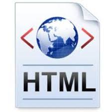

Creacion Html

HTML, el lenguaje de marcado para la creación de páginas web, fue desarrollado en 1991 por Tim
Berners-Lee. Con el objetivo de facilitar el intercambio de documentos científicos en la web, su creación permitió
la formación de la World Wide Web tal como la conocemos hoy.
Primer documento Html
En 1992, Tim Berners-Lee creó el primer documento HTML que se considera el primer sitio web del
mundo. Este documento, alojado en la Universidad de Cern, se titulaba "World Wide Web Project" y describía el
proyecto que él mismo estaba desarrollando. Este hito marcó el comienzo de la era moderna de la web.

Creacion HTML 4.01
HTML 4.01, lanzado en 1999, mejoró la estructura y presentación de documentos web con la
introducción de CSS y objetos multimedia. XForms 1.0, una recomendación del W3C en 2004, revolucionó los
formularios web al separar la presentación del contenido y facilitar una manipulación de datos más flexible.
Creacion HTML 5
HTML5, lanzado oficialmente en octubre de 2014, fue una gran actualización del lenguaje de marcado
para la web. Desarrollado por el World Wide Web Consortium (W3C) y la Web Hypertext Application Technology Working
Group (WHATWG),

aaaa
aaaa